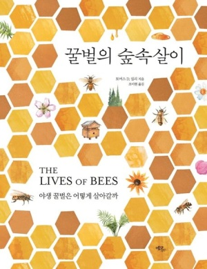

양봉가를 위한 '토머스 D.실리'의 '다윈식 양봉' 제안 리스트
| 본인 양봉장에 적응한 벌과 작업하기 | |
| 벌통의 간격을 가능한 한 멀찍이 떨어뜨리기 | |
| 군락을 작은 벌통에 살게 하기 | |
| 벌통 내벽의 표면 처리를 매끈하지 않게 하거나 내벽을 톱으로 거칠게 켠 재목으로 만들기 | |
| 단열이 잘되는 벽이 있는 벌통을 사용하기 | |
| 벌통을 지면으로 높은 곳에 두기 | |
| 군락이 벌통에서 10~20퍼센트의 벌집을 수벌집으로 유지하도록 하기 | |
| 각 국락 둥지의 기능적 구조가 유지하도록 둥지 구조의 파괴를 최소화하기 | |
| 군락의 이동을 최소화하기 | |
| 군락을 살충제와 살진균제로 오염된 꽃으로부터 최대한 먼 곳에 위치시키기 | |
| 군락을 습지, 숲, 버려진 들판, 황무지 등 최대한 많은 자연 지역으로 둘러싸인 장소에 위치시키기 | |
| 군락이 추가로 필요할 때에는 벌 유인통으로 분봉군을 포획하거나, 강한 군락으로부터 '분가'를 시켜 그들이 유사시 여왕벌을 키우고 자연 교미를 수행하도록 놔둠으로써 얻기 | |
| 군락으로부터 꽃가루 채집과 벌꿀 수확을 최소화하기 | |
| 군락의 꿀벌응애 처치를 삼가하기 |
더 궁금하시다면 이 책을 읽어보세요!
코넬 대학교 생물학 호러스 화이트 교수 '토머스 D.실리의'의 책으로 꿀벌의 생태와 꿀벌 양봉에 관한 책입니다.
양봉인이지만 꿀벌과 양봉에 대해 지식이 부족하신 분들을 위해 추천드립니다!
네이버 도서로 이동
네이버 도서로 이동
